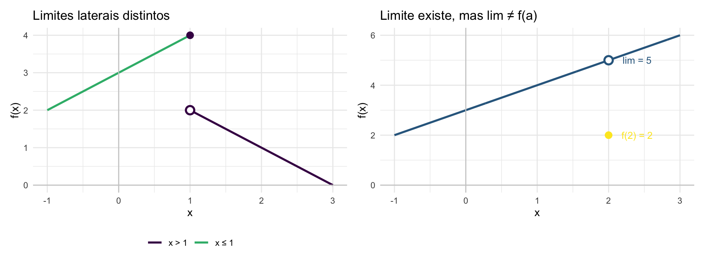

library(ggplot2)
library(patchwork)
base <- theme_minimal(base_size = 11)
# Exemplo 1: limites laterais distintos
x1a <- seq(-1, 1, length.out = 200)
x1b <- seq(1, 3, length.out = 200)
df1 <- rbind(
data.frame(x = x1a, y = 3 + x1a, ramo = "x ≤ 1"),
data.frame(x = x1b, y = 3 - x1b, ramo = "x > 1")
)
pts1 <- data.frame(
x = c(1, 1),
y = c(4, 2),
tipo = c("fechado", "aberto")
)
p1 <- ggplot(df1, aes(x, y)) +
geom_line(aes(color = ramo), linewidth = 1) +
geom_point(data = pts1[1,], aes(x,y), color = "#440154", size = 3) +
geom_point(data = pts1[2,], aes(x,y), color = "#440154", size = 3,
shape = 21, fill = "white", stroke = 1.5) +
geom_hline(yintercept = 0, color = "gray80") +
geom_vline(xintercept = 0, color = "gray80") +
scale_color_manual(values = c("#440154","#35b779")) +
labs(title = "Limites laterais distintos", x = "x", y = "f(x)", color = NULL) +
base + theme(legend.position = "bottom")
# Exemplo 2: limite bilateral existente mas f(2) ≠ L
x2a <- seq(-1, 3, length.out = 400)
y2a <- 3 + x2a
pts2 <- data.frame(x = c(2, 2), y = c(5, 2), tipo = c("aberto","fechado"))
p2 <- ggplot(data.frame(x = x2a, y = y2a), aes(x, y)) +
geom_line(color = "#31688e", linewidth = 1) +
geom_point(data = pts2[1,], aes(x,y), color = "#31688e", size = 3,
shape = 21, fill = "white", stroke = 1.5) +
geom_point(data = pts2[2,], aes(x,y), color = "#FDE725", size = 3) +
geom_hline(yintercept = 0, color = "gray80") +
geom_vline(xintercept = 0, color = "gray80") +
annotate("text", x = 2.4, y = 5, label = "lim = 5", color = "#31688e", size = 3.5) +
annotate("text", x = 2.4, y = 2, label = "f(2) = 2", color = "#FDE725", size = 3.5) +
labs(title = "Limite existe, mas lim ≠ f(a)", x = "x", y = "f(x)") +
base
p1 + p2